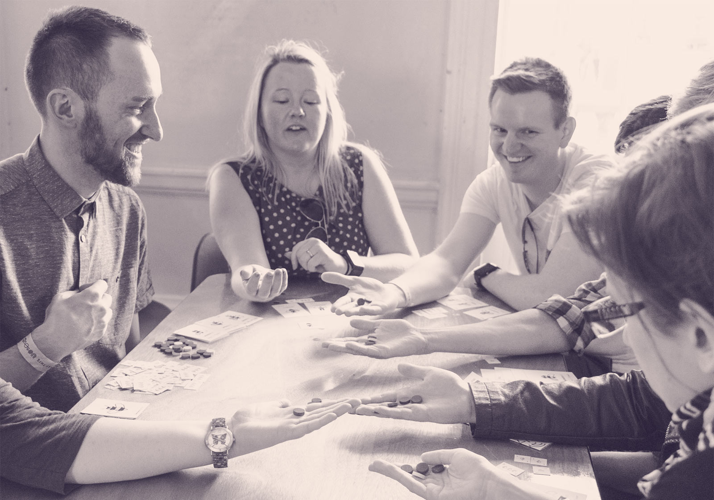
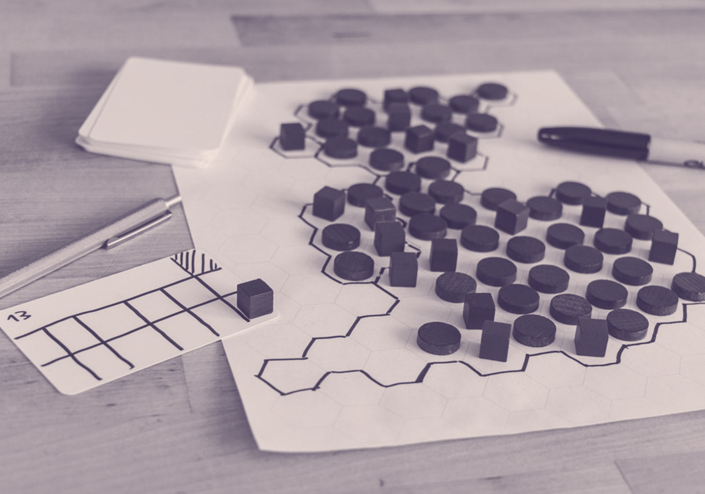

If I say company away day or team-building afternoon, what comes to mind?
Greetings, presentations, paintballing, barbecuing?
Colleagues need to connect, but sometimes those activities seem disconnected.
What if exploring shared values as a team could be fun and purposeful at the same time? And no, I don’t mean volunteering to clean up the local park (although that’s a noble cause, but not an easy one to convince your team to embark on).
How about playing and making games for an hour, or an afternoon, or a day?

Why make games?
Games are more than just fun.
They are a powerful medium because they let us step out of our (job) roles and immerse ourselves in a different world, with its own rules and roles. Unlike other media, as players we constantly make active choices: we shape the story, instead of just consuming it.
Beyond solitary entertainment and power fantasies, games can make us think, help us learn and engage with complex questions, and problem-solve in a safe space where mistakes are free.
Beyond zombies and space wars, we can play games about our reality. And we can make games about how we want to transform our reality.
Making games promotes empathy
A game doesn’t exist without players. Imagine making a game for (or about) another team in your organisation. When designing it, you will really have to get into their shoes, understand their challenges and their goals, then turn your understanding into a playable activity.
Making games fosters deep conversations
A game doesn’t have a fixed outcome. When the outcome depends on the choices of all players, you will naturally start discussing ideas, weighing alternatives, and making decisions together. This is super-charged when you become the game makers.
Making games stimulates systems thinking
A game is a bunch of rules. Rules defining how you can play, and rules describing how the game world will respond to you. When you are making the rules, you make that world. Whether the world is your organisation, your industry or a problem you're working on, you will model that as a system, identifying its moving parts and exploring the behaviours of its actors.
Making games gives teams agency and initiative
A game is a playable model of a complex system. When the system you are modeling is (part of) your business, the game becomes a tool for teams to explore ways to interrogate the system, and tweak how it works. Asking a lot of “what if” questions, designing and testing solutions which could be applied in the real world.

Why board games?
Making board games can be quick and simple
In a board game, there is no software that gets in the way. You are the game engine. You constantly process rules and check that other players are not cheating. This means that making a new board game can be as simple as agreeing to new rules between players.
You don’t need to know how to code. No need to worry about digital bugs. All you need is paper-prototyping material and a curious mind.
Making board games is collaborative
Instead of working on a computer (a device designed for a single human) when making a board game all team members can throw ideas on the table, move pieces around and think together.